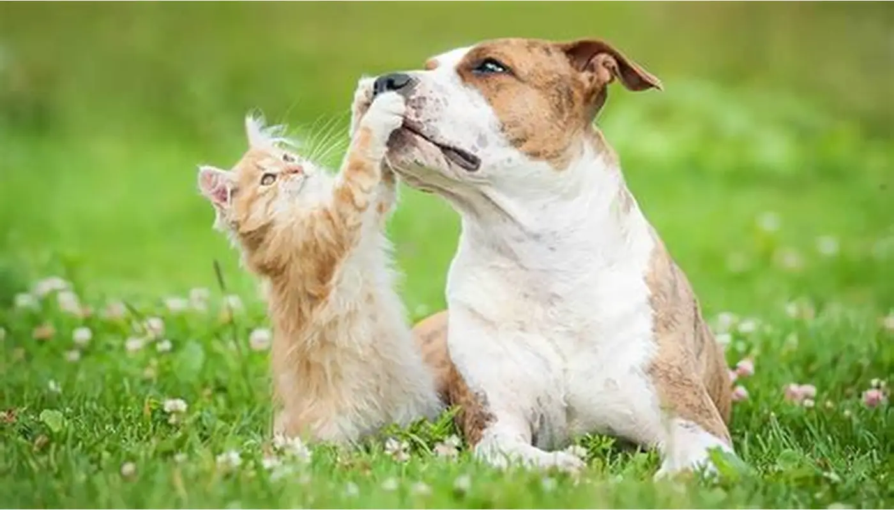

Por cada huellita, una nueva oportunidad
Somos una organización dedicada al rescate, cuidado y adopción responsable de animales en situación de abandono.
Quiero ayudarSobre nosotros
Proyecto Huellitas nace con el objetivo de proteger a los animales que más lo necesitan. Trabajamos para rescatar perros y gatos abandonados, brindarles atención veterinaria, alimento, refugio y encontrarles una familia responsable que les dé amor y cuidado.
Qué hacemos

Rescate animal
Ayudamos a animales en situación de calle, abandono o maltrato para darles una segunda oportunidad.

Adopción responsable
Buscamos familias comprometidas que puedan ofrecer un hogar seguro, estable y lleno de amor.

Concientización
Promovemos el respeto animal, la castración, la tenencia responsable y la importancia de no abandonar.
Cómo podés ayudar
❤️ Adoptá
Dale un hogar a un animal que necesita amor, cuidado y compañía.
🏠 Transitá
Ofrecé un hogar temporal hasta que el animal encuentre una familia definitiva.
🥣 Doná
Podés ayudar con alimento, mantas, medicamentos, dinero o elementos de limpieza.
Descubrí el impacto de tu donación
Ingresá un monto y conocé de forma estimativa cuántas raciones de alimento, vacunas o consultas veterinarias podrían cubrirse con tu aporte.
Calcular mi impactoContacto
📍 Buenos Aires, Argentina
📧 proyectohuellitas@gmail.com
📱 Instagram: @proyectohuellitas
Escribinos